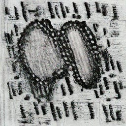
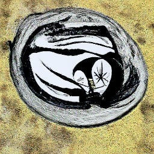

An
abstract drawing of a computational model. CGD
generated.
An
abstract drawing of a computational model. CGD
generated.
minimalpriora spinoff |
Updated | ||
|---|---|---|---|
| Author | Jan Kirchner | ||
Asking for a friend[1]: what happened to Richard Hamming’s social status after he started asking those pointed questions about the importance of research questions and individual career decisions? Was he, like, actually banished from the lunch table?
[1]
Okay, okay, I can’t lie to you. That friend is me. I’m worried about getting banished from the lunch table.
A couple of months ago I’ve started asking my colleagues during lunch what their definition of a “model” is. This question is important: our job consists of building, evaluating, and comparing models. I am not hoping for an Aristotelean list of necessary & sufficient conditions, but it still appears like a good idea to “survey the land”. Also, admittedly, lunch can get a bit boring without challenging questions.
An
abstract drawing of a computational model. CGD
generated.
I got a range of responses:
” a description of a phenomenon from which you can reason (= a description you can manipulate to tell more about the phenomenon than you would have been able to tell without it) ”
” It should be something like a representation of the modelled system without representing it completely. Perhaps most importantly that it preserves the causal relationships between the system elements without completely mapping these elements? ”
” an abstraction of reality ”
I also ran into this adage again and again (attributed to a different person every time):
” All models are false, but some are useful. ”
Along similar lines, there is a quote from the influential computational neuroscientist Larry Abbott:
” the term ‘realistic’ model is a sociological rather than a scientific term. ”
Alright, survey done, lunch is over. Back to…
No! I’m not satisfied. What do you mean it’s a sociological term? What do you mean they are false? Can a model have a truth value? If a model is a “representation” / “abstraction” / “description” then what exactly is a “representation” / “abstraction” / “description”? This is not some idle philosophical nitpicking, this question is immediately important. As a reviewer, I have to judge whether a model is good (enough). As a researcher, I want to build a good model. I’m not going to devote my career to building models if I don’t have a really good idea of what a model is.
I hope you can tell from my extensive use of italicized words that this is a topic I am rather passionate about. If the question of a good model is a sociological question then it’s subject to trends and fads[2]. And if the term “model” is broad enough to fit “detailed biophysical models”, “abstract phenomenological models”, “linear regression” and “a cartoon in Figure 8” under its umbrella, then it’s inevitable that our intuitive understanding of what constitutes a good model deviates. Heck, the term is so broad, technically even this should qualify:
[2]
And it’s usually up to an influential “ingroup” to decide what fits in and what doesn’t.
An abstract painting of a very attractive albatross that could totally be a fashion model. CGD generated.
So in the spirit of conceptual engineering and dissolving questions, here goes my attempt of laying out what I think of when I think of models. This is obviously not authoritative and it’s far from rigorous. This is just my “working definition” which I wrote down to force myself to tighten my terminology.
Since we mean so many different things by the term “model” it makes sense to start very general, i.e. mathematical. There is indeed a subfield of mathematics called “model theory” that makes some very useful distinctions! I’ll trample over all subtleties to get to the core quickly, but consider checking out this or this for accessible introductory reading.
Here goes the central definition:
A model is a (mathematical) object that satisfies all the sentences of a theory.
To make this useful, we have to further define the used terms.
What is a theory? It’s a set of sentences. What is a sentence? Well, it’s pretty much what you would expect - it’s a string of symbols constructed from an alphabet according to some fixed rules. A famous example of a theory is Peano arithmetic, but really the definition is much more general:
An abstract drawing of a cellular automaton. CGD generated.
Now to the other part of the definition. What is a mathematical object? Phew , you are opening a can of worms… But I’m pretty sure you’ll recognize a mathematical object when you see it. R,Q,Z,N , and all the cool stuff you can build from those sets, those are mathematical objects. N satisfies the theory of (and is, therefore, a model of) Peano arithmetic. For the three theories mentioned above, the mathematical objects that satisfy them are:
If we are allowed to be even more hand-wavy, then we can also incorporate models à la Tyler Cowen: To “model this [headline]” we have to come up with a theory (a set of sentences) from which the headline follows.
One important thing to note here is that every model “inherits” every property that follows from the theory. But the inverse does not hold[4]: just because a model has a certain property, this property does not necessarily follow from the theory. In general, there will always be multiple models that satisfy a theory, each with different “additional properties” that go beyond what is prescribed by the theory[5].
[5]
One might be tempted to argue that if many different models satisfy the same theory, this is evidence that the property actually does follow from the theory. This isn’t guaranteed, but it might work in some cases. In Computational Neuroscience, this is the practice of demonstrating that the desired result holds even when the parameter is slightly perturbed.
[4]
This inverse only holds when the model uniquely and completely specifies the model, which is pretty hard to achieve in principle. See Logical Pinpointing.
All fine and well. What does this added complexity buy us?
Defining a model as an object satisfying a theory is broad enough to cover all the ways in which the term is used:
the entire spectrum of mathematical models, from detailed biophysical to normative Bayesian, is specified by a set of equations (a theory) and instantiated with parameter choices.
the “cartoon in Figure 8” is one particular (rather toothless) object that satisfies an implicit theory (consisting of a set of conjectured sentences).
the albatross fashion model… doesn’t fit. But you can’t have everything, I’m told.
It also includes an interesting pathological case: to model a particular set of observations, we could just come up with a theory that contains all the observations as axioms, but no production rules. Then the observations themselves trivially satisfy the theory. This is clearly useless in some sense[6] (a dataset shouldn’t be a model?) - but looking deeper into why it’s useless reveals something about what constitutes a good model - or, by extension, a good theory.
[6]
This has some overlap with Chomsky’s levels of adequacy: a theory that includes only the observations as axioms has observational adequacy, but neither descriptive nor explanatory adequacy.
Here is my definition:
A good model of a phenomenon is one that allows us to understand something about the phenomenon. If all the models of a theory are good models, the theory is a good theory.
Again, we need to define our terms for this to make sense. What is a phenomenon? A phenomenon is some (conjunction of) physical process(es). It’s something out there in the territory. What does understand mean? Understanding a phenomenon means predicting (better than chance level) the state of the phenomenon at time t+1 given the state at time t.
Why does it make sense to set up things like this?
First, it establishes a neat hierarchy. Understanding is gradual: It goes from non-existing (chance level) to poor (consistently above chance[7]) to great (almost perfect prediction) to complete (100% prediction accuracy).
[7]
Or below, of course! If you’re consistently worse than chance that is very useful information.
With this definition, a “black box” deep learning model that is able to predict a percentage of brain activity does provide some understanding about a part of the brain. Similarly, a mean-field model that has “lost” some conversion factor in its units can also still be a good model, as long as it is able to get the direction of the evolution of the state correct.
Second, by making “predictions” the central criterion for the model quality we avoid unproductive disputes resulting from mismatched terms. The usual example here is “If a tree falls in the forest, does it make a sound?”, which can lead to a highly unproductive discussion if asked at the lunch table. But when explanations are evaluated according to their predictive power, misunderstandings are resolved quickly: Either a tape recorder will or won’t record airwaves. Either there is or there isn’t activation in some auditory cortex.
Third, to have a good theory, you need to demonstrate that all its models are good (according to the definition above). This gets naturally easier if there are fewer models that satisfy the theory, thus incentivizing you to remove as many free parameters from the theory as possible[8]. Ideally, you’ll want a unique characterization of a good model from your theory.
[8]
Thus we arrive at an interesting version of Occam’s razor.
Finally, this definition formalizes the “all models are wrong, but some are useful” adage. To get 100% prediction accuracy for a physical process you have to go down to the level of particles. F.e. having a fluid dynamics model of water motion will get you very far in terms of predictive power. In that sense, it’s a very good model. But to get even close to 100%, you’ll want an atomic model of water. And eventually, if you are pushing for ever more predictive power, you’ll have to decompose your problem further and further, and eventually, you will get into very weird territory[9].
[9]
Let’s not talk about quantum stuff on this Substack, okay?
An abstract drawing of the solar system. CGD generated.
Thus, to determine whether a model is good or bad, you have to figure out which phenomenon it is trying to explain and then determine if the model allows you to predict the time-evolution of the phenomenon better than chance level. This is a relatively low bar, but in my experience, it’s still not easy to clear. Actually demonstrating that your performance is different from chance requires explicit performance metrics, which are not usually adapted. But that’s a different story.
This is almost all I wanted to say on the topic. But I glossed over an important point in that exposition: If a model is a mathematical object, why might we expect that it can predict physical processes out there in the territory? In fact, why should there be any similarity between the solar system and the atom[10]? Why does analogical reasoning work?
[10]
Yes, I know that the Bohr model is not the end of the story. But it is still able to explain basically all of chemistry. And also ” let’s not talk about quantum physics on this Substack “!
I’m glad you ask. Stay tuned - I’ll dig into that next time.
[3]
Plus ZFC, I guess.